WYRD
A messaging app with two speeds: fast chats for now, and slow letters that take as long as the real distance.
- Role
- Product Designer, end-to-end
- Type
- Personal project · product concept
- Platform
- iOS messaging app · Clickable prototype
- Result
- ★ 20 high-fidelity screens · Prototype you can try
- What I worked on
- Product concept · UX flows · Interaction design · Visual identity & color system · High-fidelity UI · AI-assisted prototyping
Every message arrives at the same speed: right now.
Chats, groups, notifications. Everything lands instantly, and everything feels like it needs an answer instantly too. Messaging turned into one more source of digital fatigue.
But not every conversation wants to be fast. Some things are better written slowly, and received slowly. Letters used to have that: time to think, time to wait, and the small joy of something arriving.
What if one app let you choose the speed of each conversation?
The idea came up in conversations with my friend Dieter, who found it romantic to send a letter and wait for it to arrive. That’s where I started designing the concept.
Two speeds, one place.
The Channel · fast
Instant chat for the people you already talk to. Violet, familiar, and right there when you need it.
The Drop · slow
Sealed letters that travel the real distance. A letter crossing 9,400 km takes about three days to land.
Around that core, WYRD adds a layer of play: guardians, collectible creatures that carry your letters and live in portals tied to real regions. You earn them by traveling or by writing. The aesthetic is cyber-witch: neon, seals, grimoires and a bit of magic.
The reference
Slowly proved that people want slow letters with strangers. WYRD takes that idea and puts it next to the chat you already use, so slow and fast live together instead of in separate apps.
My role
I designed WYRD end-to-end, from the concept to a clickable prototype:
- Defining the product idea, the two speeds, and the rules behind them
- Mapping the flows: onboarding, sending and receiving drops, chat, and keeping letters
- Building a color system where each color means something
- Designing 20 high-fidelity iOS screens and linking them into a prototype
Prototyped with AI-assisted tools.
Explain the magic in four taps.
The onboarding has one job: make the slow part feel exciting, not like a limitation. Distance is presented as the feature, and location is asked for only after it makes sense.
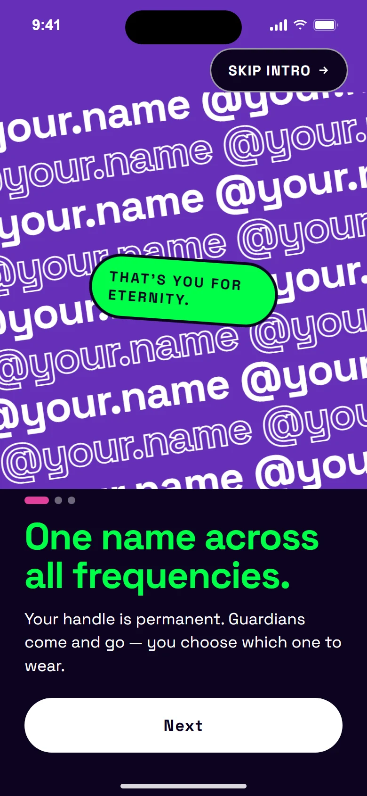
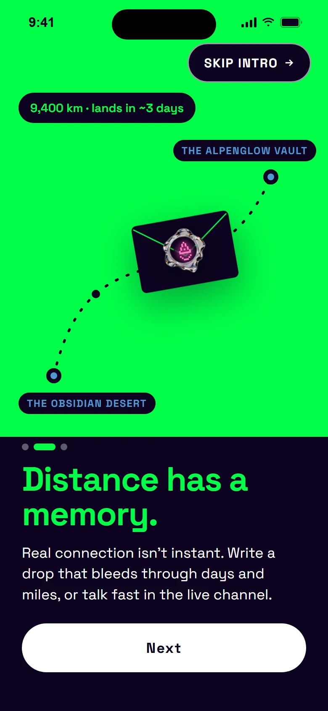
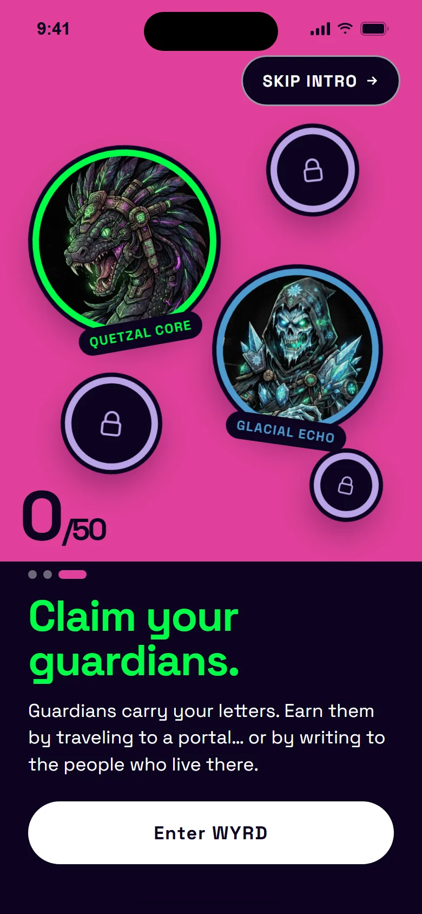
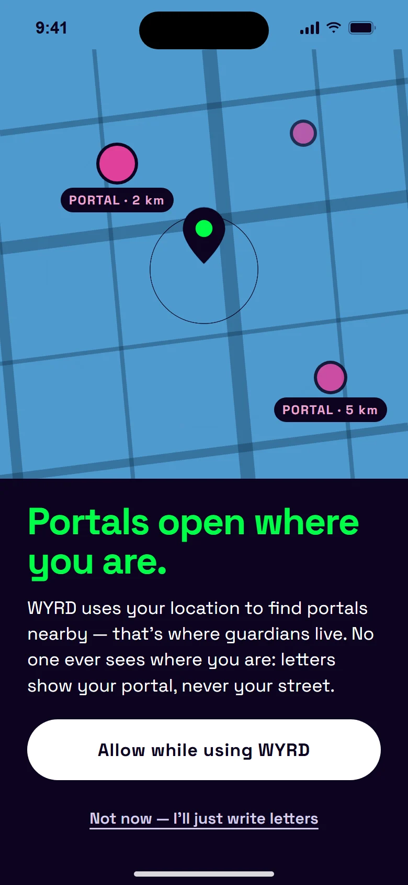
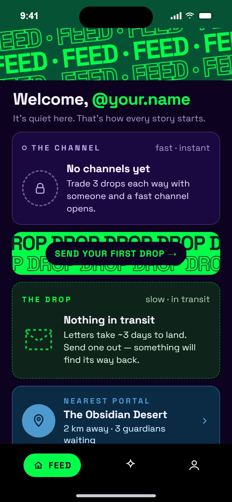
Fast and slow, side by side.
The feed shows both speeds at once, each with its own color: violet for The Channel, green for The Drop. A countdown turns waiting into anticipation.
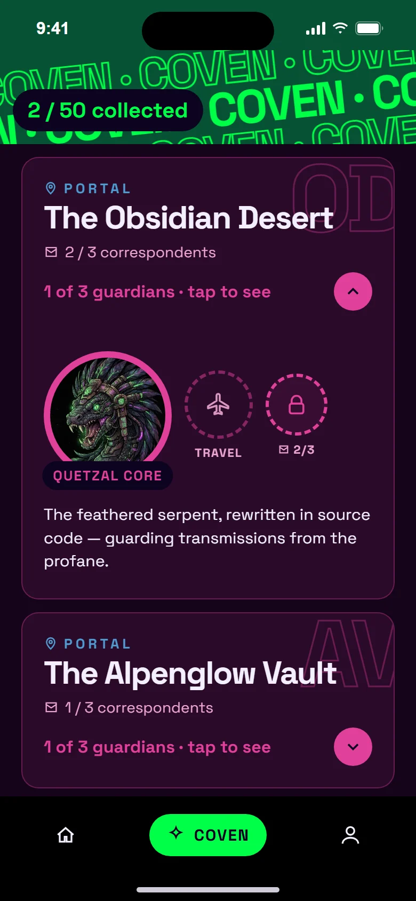
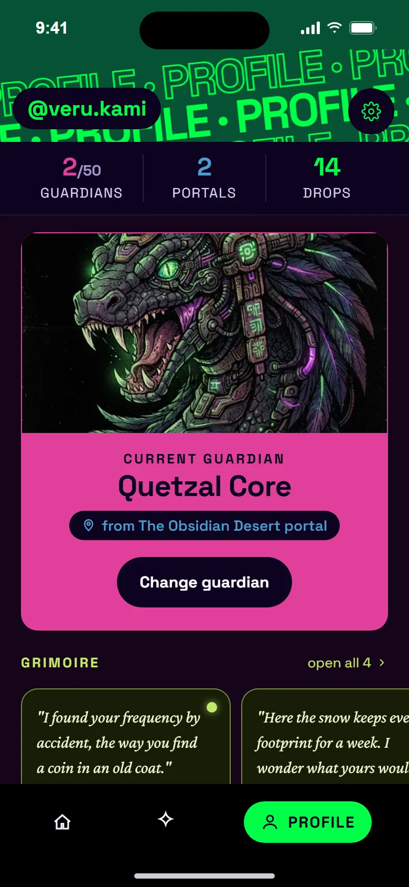
A letter you can’t peek at.
Random drops go to strangers anywhere in the world. They arrive sealed, with no preview: the seal only tells you which guardian carried it. Once opened, you decide what happens to it.
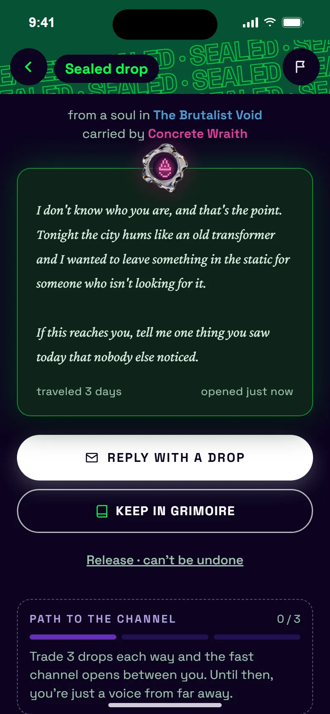
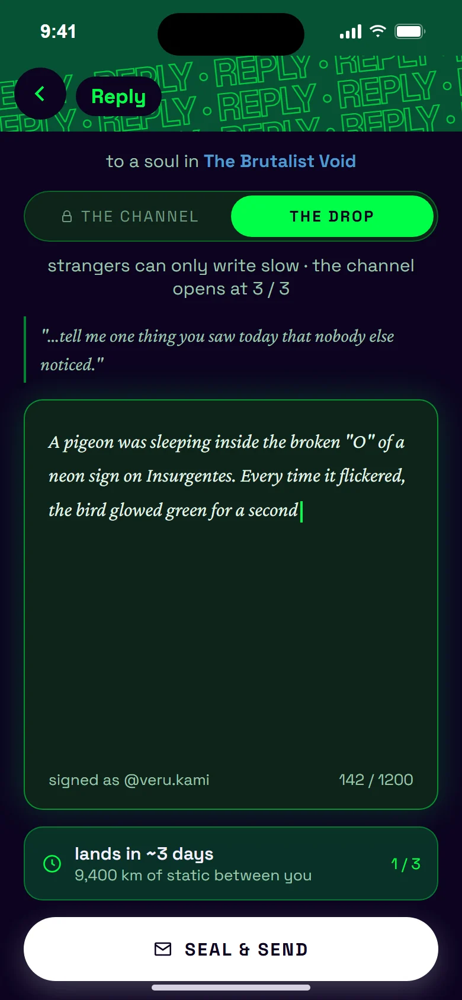
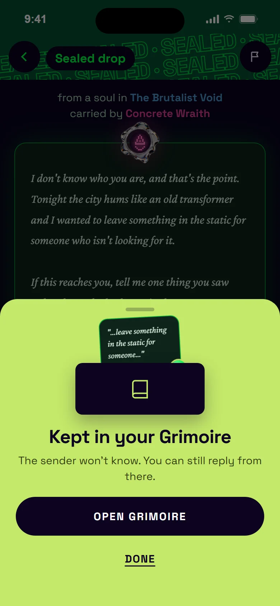
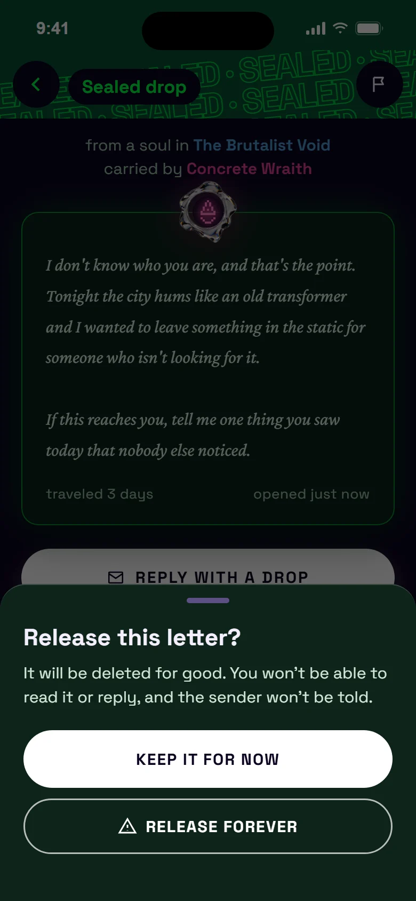
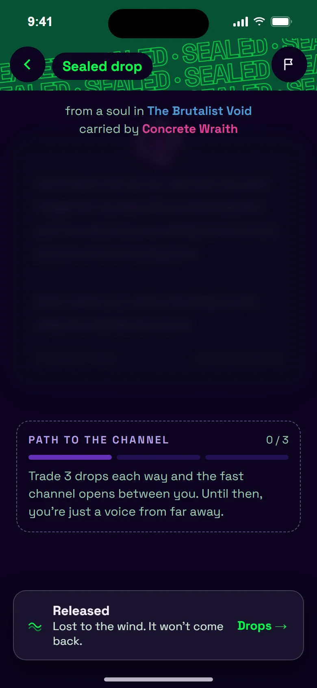
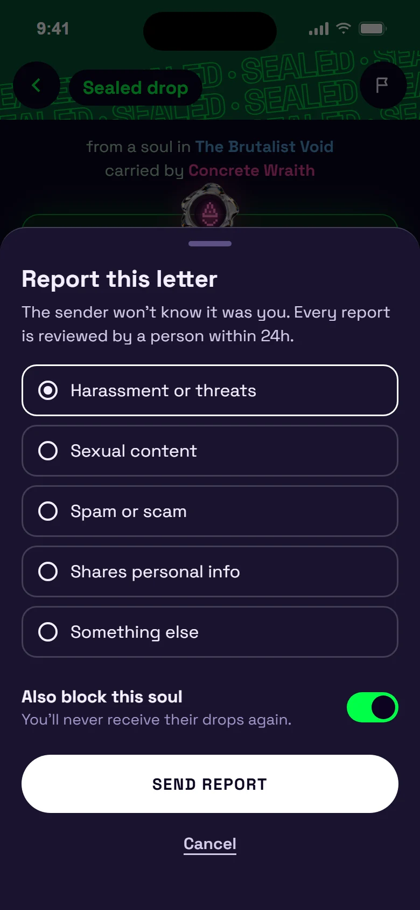
Earn the fast lane.
With a stranger, the chat starts locked. After three letters back and forth, The Channel opens and the conversation can speed up. Inside the chat, tabs set both what you see and how you write.
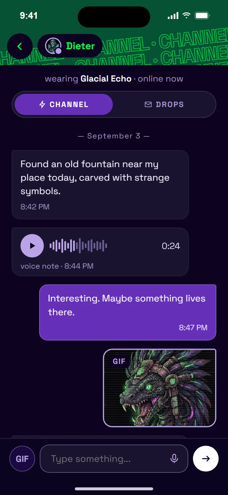
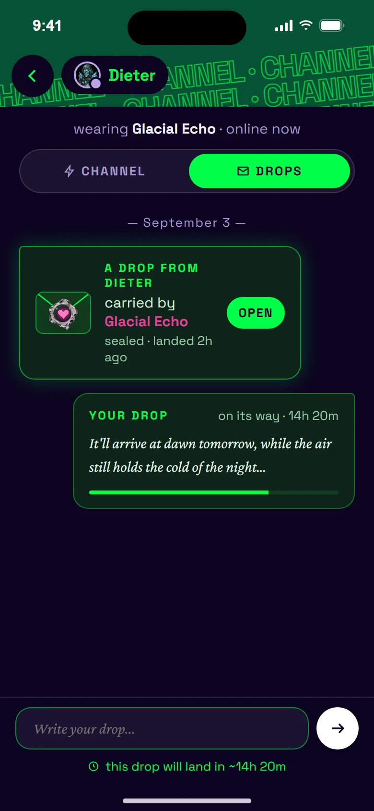
Once a letter lands, it’s theirs.
The Grimoire keeps the letters you chose to save. Your own letters stay visible only while they travel: after they land, they belong to the other person. You see your words again only if someone writes back.
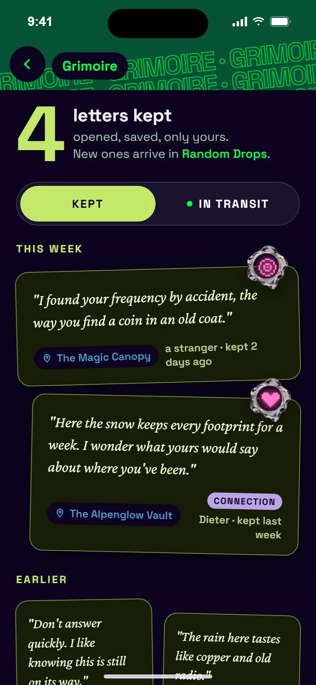
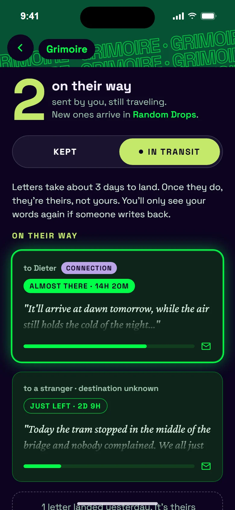
Every color means something.
The V2 moved from an all-dark interface to bold color blocks. Each color has one job, so people can read the state of a letter before reading a single word.
Neon green is the primary color, and it’s reserved for what makes WYRD different: letters on their way. It’s the only pure neon in the app, so the slow part is always what stands out. Type pairs Space Grotesk for the interface with Crimson Pro italic for the letters, so a letter always feels handwritten next to the UI.
Magic, but safe with strangers.
- Location without exposure: letters show your portal, never your street. The permission is explained before the system prompt, and you can skip it and just write.
- No preview, no pressure: drops arrive sealed, and nothing asks for an instant answer.
- Irreversible means ask first: releasing a letter always shows a confirmation.
- Report and block are always one step away from any letter.
- Trust before speed: the fast chat with a stranger opens only after three letters.
WYRD started from a simple question about speed and became a lesson in designing rules, not just screens. Waiting is only fun when the product makes it feel like anticipation.
Not every message needs to arrive right now. Some are worth the trip.